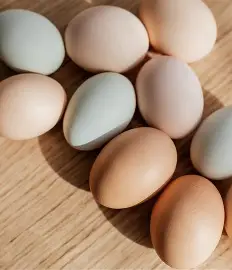
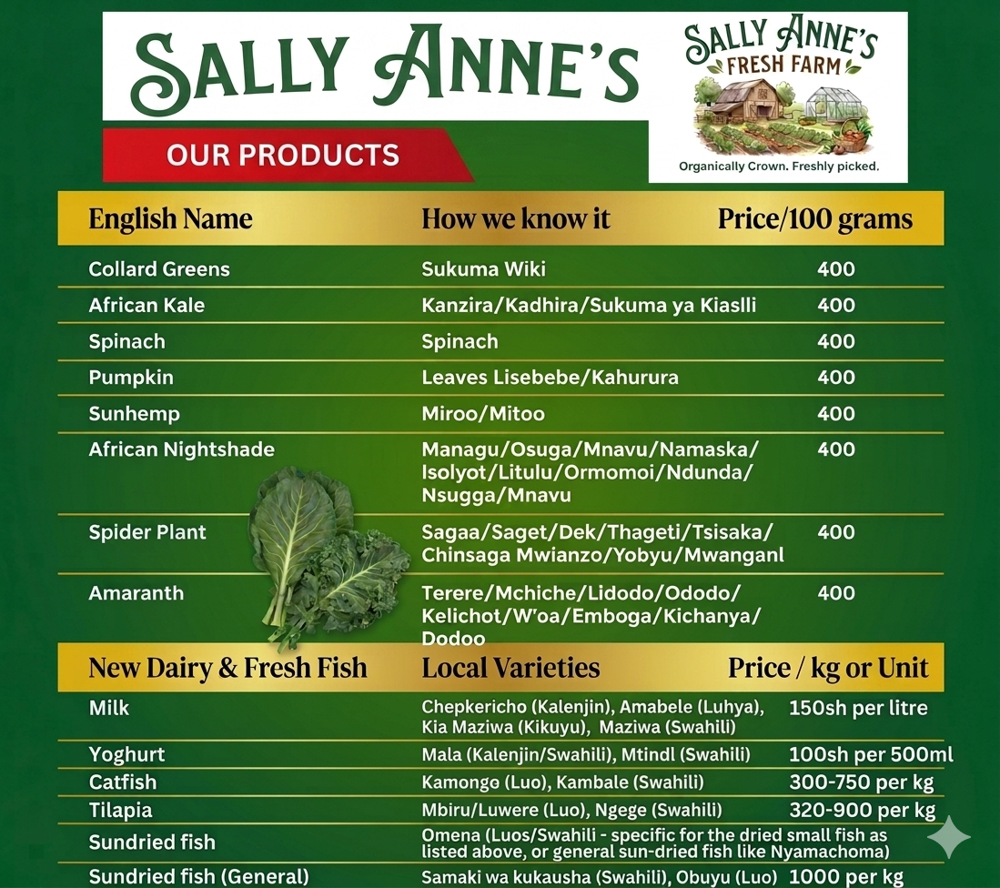

Welcome to the Farm

Sally Anne's Farm is a progressive and diversified agricultural enterprise located in Pap-Onditi, Nyakach, in Kisumu County, Kenya.
The farm is dedicated to producing healthy, high-quality, and value-added farm products that improve nutrition and support sustainable livelihoods.
About Us

At Sally Anne’s Farm, we are passionate about organic farming and sustainable food production. Based in Paponditi, Nyakach, Kisumu County, our farm operates in a rural environment that allows us to grow and rear our products naturally and responsibly.
Our farm includes dairy goats, poultry, and rabbit farming—utilizing rabbit urine as a natural fertilizer for our 100% organic crops. We also manage aquaculture ponds and grow fresh leafy vegetables.
Through our work, we aim to promote community nutrition awareness, support local food access, and provide high-quality organic products our customers can trust.
Our Specialized Services
🐐 Our Livestock
Dairy Goat Farming
We rear healthy, well-managed goats for milk production.
What we offer:
- Fresh milk
- Goat milk yoghurt
- Natural goat milk soap

Poultry & Rabbit Farming
We provide farm-raised poultry and sustainable fertilizer solutions.
What we offer:
- Healthy farm-raised chicken
- Fresh eggs
- Natural fertilizer (Rabbit urine)

🐟 Aquaculture
Fish Pond Farming
Sustainable fish farming to provide high-quality protein to the community.
Species we rear:
- Tilapia
- Catfish
- Sun-dried fish (for longer shelf life)

🥬 Fresh & Dried Produce
Nutritious Greens
We cultivate greens with care to ensure maximum nutritional value.
- Fresh Leafy Veggies: Farm-fresh produce.
- Sun-Dried Veggies: Preserved for customers with limited access to fresh greens.

Our Farm Products & Value Addition
We don't just farm; we create high-quality products to enhance your lifestyle and health.
✨ Value Added
- Goat Milk Yoghurt: Creamy and nutritious.
- Goat Milk Soap: Natural skincare solution.
- Sun-dried Fish: Preserved for wider access.
🌱 Sustainable Farming
- Organic Leafy Vegetables
- Natural Rabbit Fertilizer
- Farm-raised Poultry & Fish
